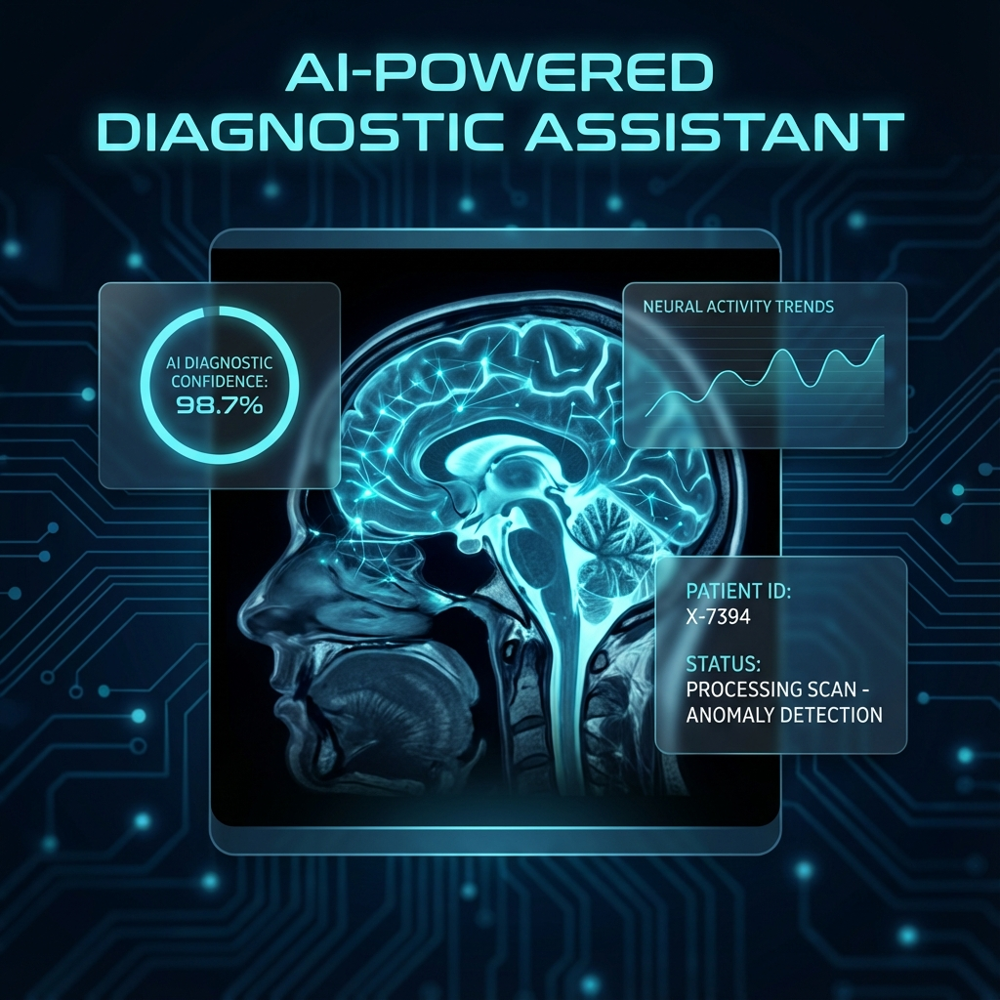
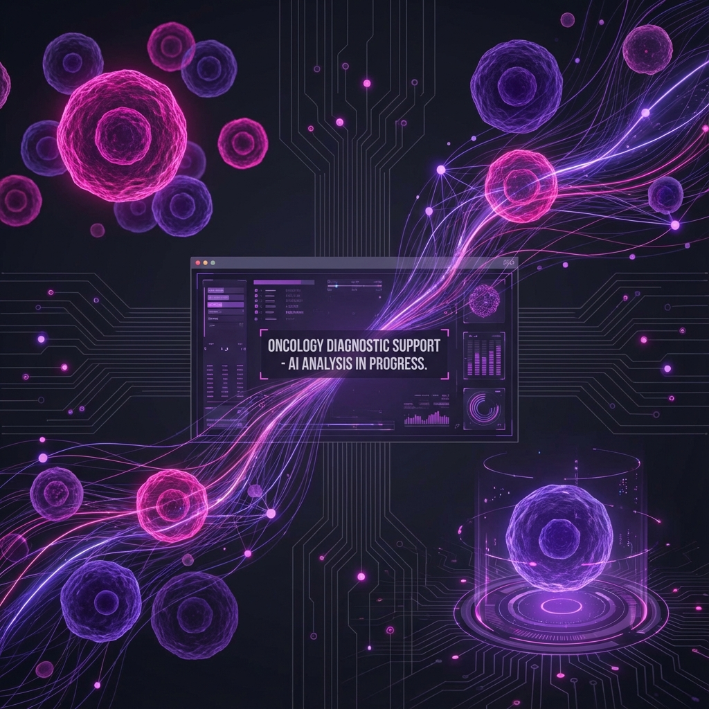
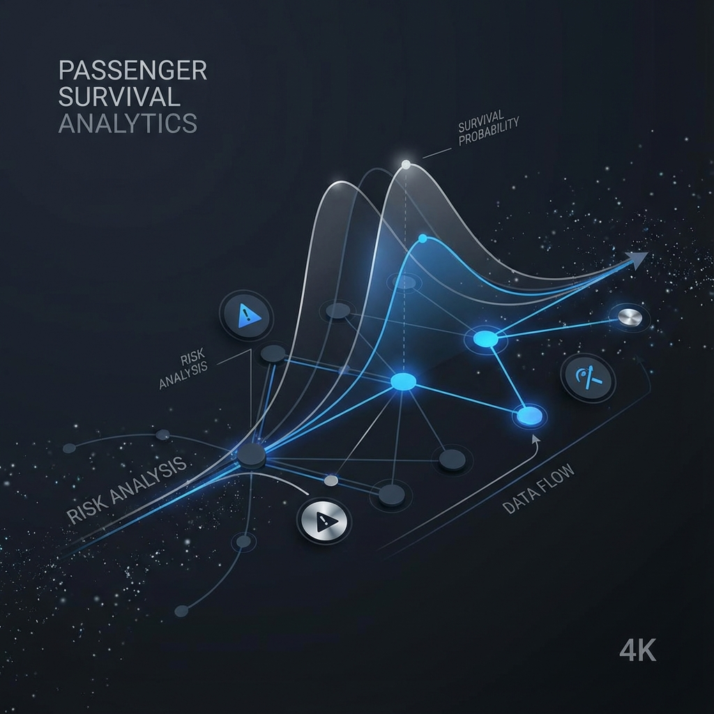
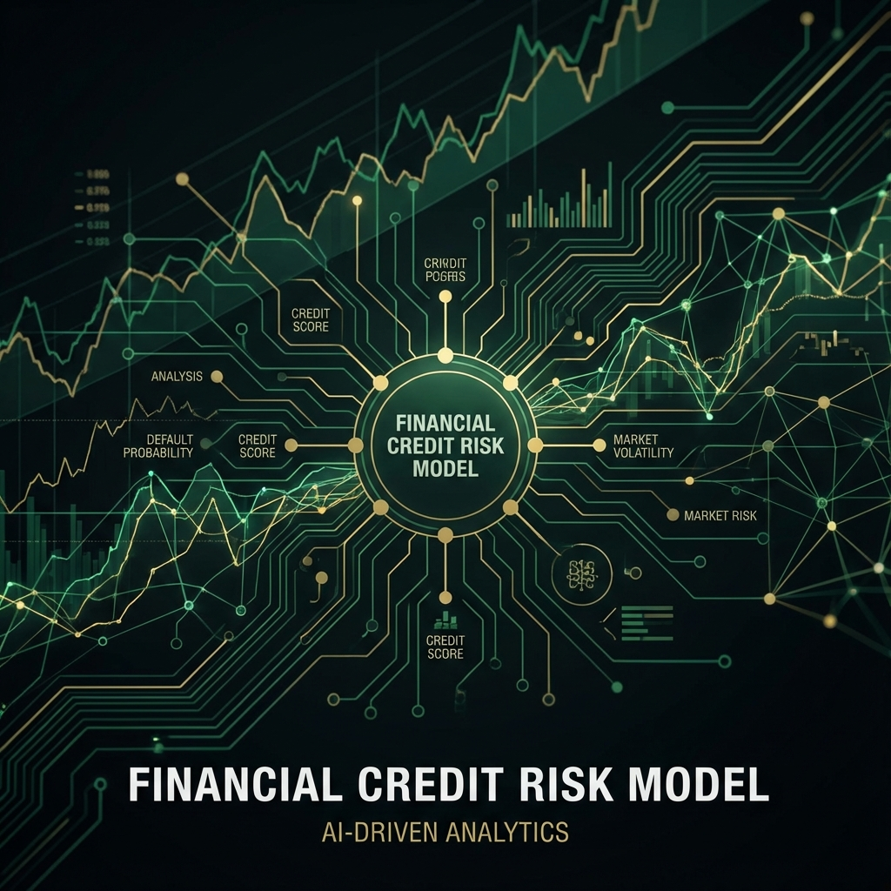
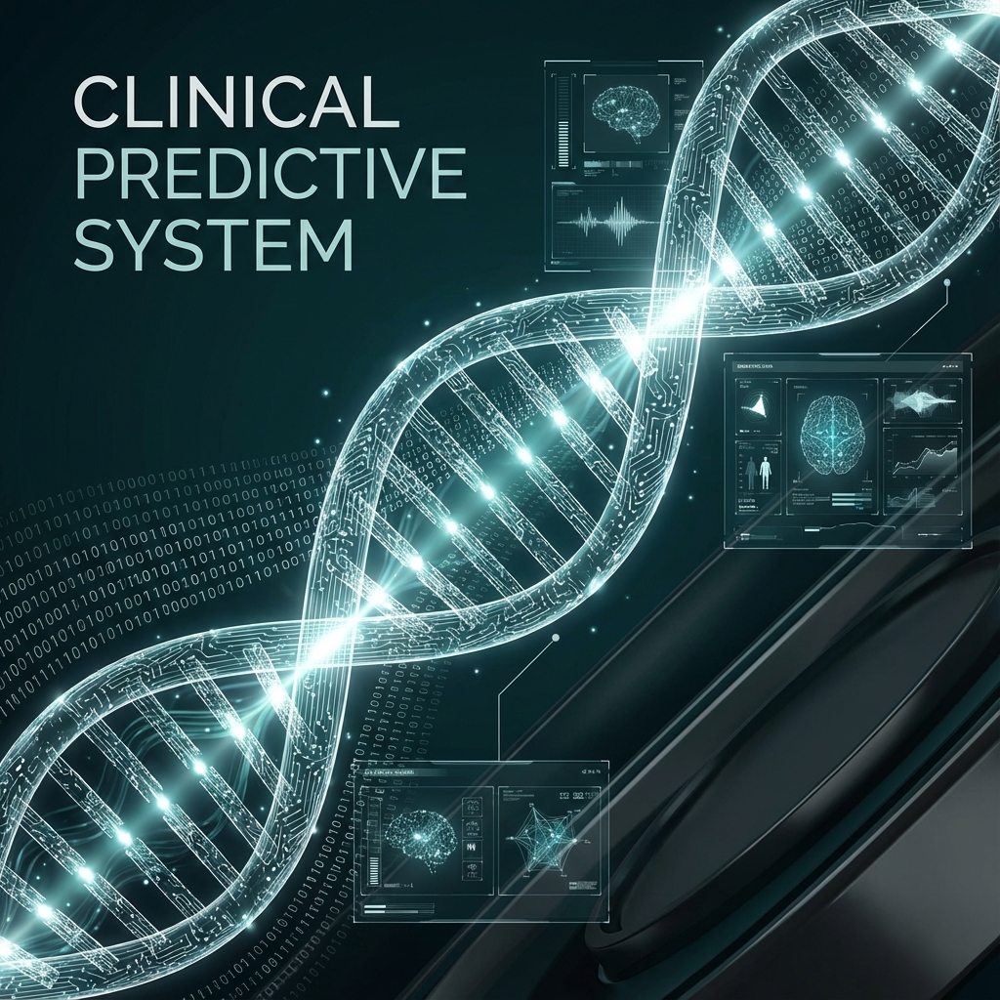
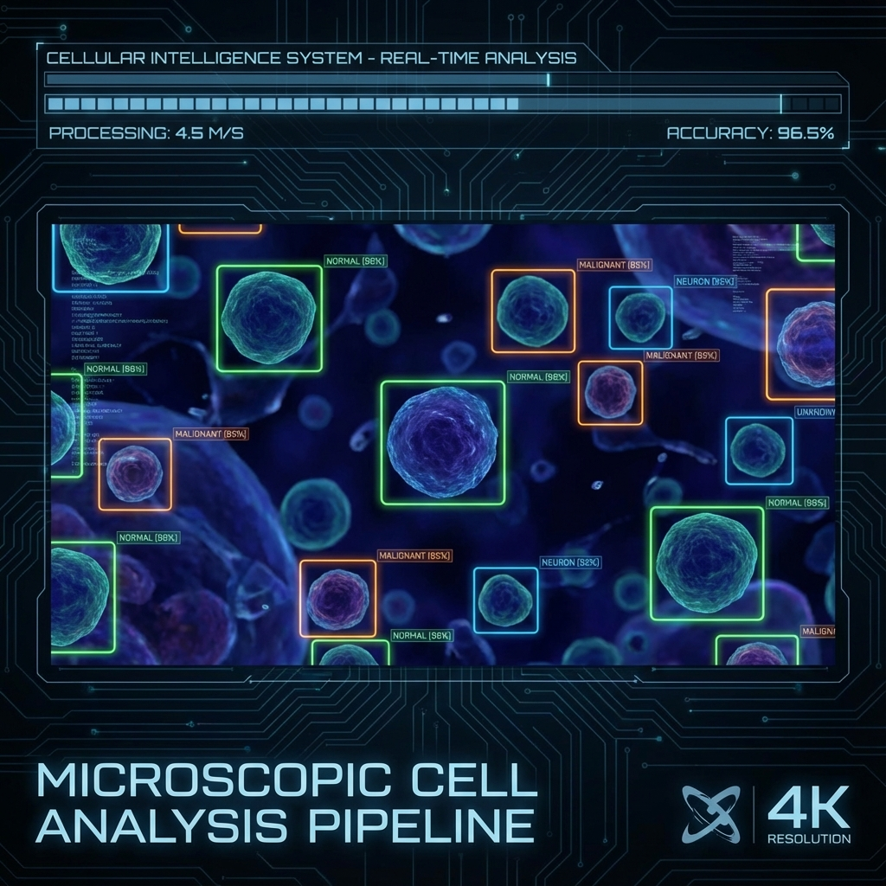

Hi, I’m Farohiddin Isomidinov
Motivated Data Scientist with strong knowledge in Machine Learning, Data Analysis, and Artificial Intelligence. I build predictive models, analyze complex datasets, and apply AI to real-world problems.
- Based: Uzbekistan
- Role: AI Developer · Data Scientist
- Phone: +998 94 2809098
Open to internships & freelance roles.
About
I’m an AI student at PDP University (Artificial Intelligence Applications and Solutions) with hands-on experience teaching robotics to kids and building machine learning systems—from data cleaning to model deployment.
Recently, I developed a CNN-based medical image classifier (TensorFlow) and deployed it as a REST API using FastAPI. I enjoy turning raw data into useful tools with clear, visual results.
Highlights
- CNN-based medical image classifier with 90%+ accuracy
- Deployed ML model as a FastAPI service
- Robotics teaching: Scratch, Arduino, sensors
- Data analysis with Bitrix, Excel, and Python
Skills
MLOps & Deployment
AI & Deep Learning
Data Engineering
Robotics
Experience
Robotics Teacher — PDP Junior
- Taught fundamentals of robotics, programming, and electronics through projects.
- Practical lessons with Scratch, Arduino, and sensors.
- Built students’ problem-solving and creativity.
AI Developer (Project-Based) — Medical Image Classifier
- Built CNN model to detect anomalies (90%+ accuracy).
- Image preprocessing & augmentation with OpenCV.
- Training with TensorFlow; results dashboard.
- Deployed as REST API with FastAPI.
Junior Data Analyst — PDP University
- Worked with student data in Bitrix.
- Applied data cleaning and analysis in academic setting.
Projects

AI-Powered Diagnostic Assistant
Real-time anomaly detection system for medical imaging, deployed as a scalable REST API using TensorFlow & FastAPI.

Oncology Diagnostic Support
High-precision classification model optimized for Recall to minimize false negatives in cancer detection.

Passenger Survival Analytics
Predictive risk modeling pipeline using Ensemble methods (RandomForest, GradientBoosting) for complex datasets.

Financial Credit Risk Model
Deep Learning system utilizing FastAI to predict loan defaults and optimize financial decision-making processes.

Clinical Predictive System
Optimized classification pipeline for early disease markers using rigorous Hyperparameter Tuning (GridSearchCV).

Microscopic Cell Analysis Pipeline
Comparative study of PyTorch CNNs vs TensorFlow architectures for high-throughput cell classification.
Education
PDP University
Artificial Intelligence Applications and Solutions
PIMA Specialized School
Programming, technical subjects, and AI fundamentals
School No. 26 DIMI
Mathematics and technical sciences foundation